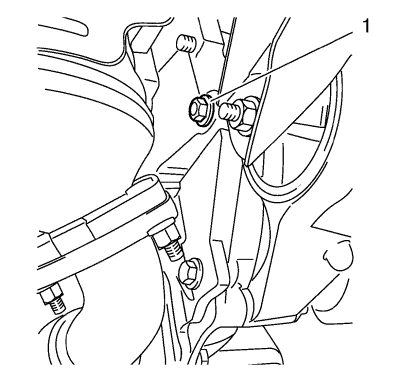
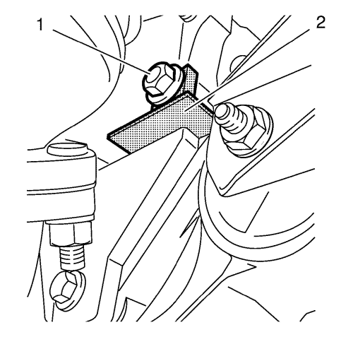
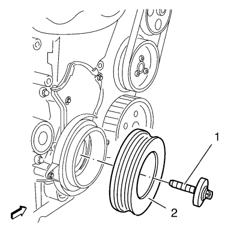

Sustitución del dámper del cigüeñal
Herramientas especiales
| • | EN-6625 Herramienta de ajuste del cigüeñal |
| • | EN-45059 Kit de goniómetro de par de apriete |
Si desea informarse sobre herramientas regionales equivalentes, consultar Herramientas especiales .
Procedimiento de desmontaje
- Abra el capó.
- Elevar el vehículo y soportarlo de manera segura. Consultar Elevación y soporte en alto del vehículo .
- Retirar el protector de salpicaduras del habitáculo frontal. Consultar Sustitución del protector de salpicaduras del habitáculo frontal .
- Desmontar la correa de accionamiento. Consultar Sustitución de la correa de accionamiento .

- Retire el tornillo (1).

- Monte la herramienta de ajuste EN-6625 (2) para bloquear el cigüeñal.
- Coloque el tornillo (1).

- Quite el tornillo (1) del compensador del cigüeñal.
- Desmonte el compensador del cigüeñal (2).
Procedimiento de montaje
- Monte el compensador del cigüeñal (2).
Precaución:Consulte Precaución con las fijaciones en la sección Prólogo.
- Monte un NUEVO tornillo del compensador del cigüeñal (1) y apriételo en 3 pasadas usando el kit de goniómetro EN-45059.
| 2.1. | Primer paso a 95 N·m (70 lib. pie). |
- Retire el tornillo (1).
- Retire la herramienta de ajuste EN-6625 (2) para desbloquear el cigüeñal.
- Para el cambio automático: Monte el tornillo (1) y apriételo hasta 75 N·m (55 lib. pie).
- Para el cambio manual: Monte el tornillo (1) y apriételo hasta 70 N·m (52 lib. pie).
- Monte la correa de accionamiento. Consultar Sustitución de la correa de accionamiento .
- Monte el protector contra salpicaduras del compartimento delantero. Consultar Sustitución del protector de salpicaduras del habitáculo frontal .
- Bajar el vehículo.
- Cierre el capó.
| © Copyright Chevrolet. All rights reserved |